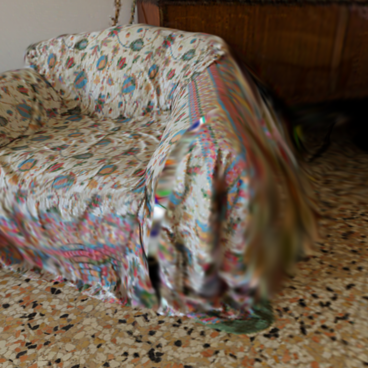
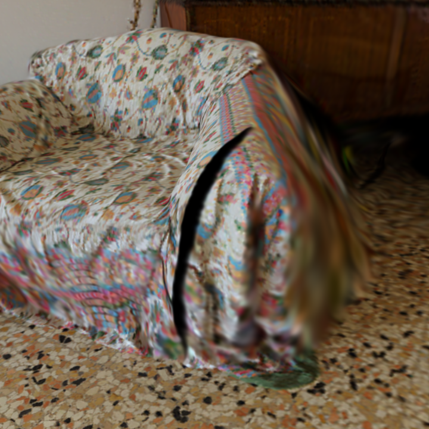

SpaceFold
A 3D room from a single panorama
SpaceFold predicts the shape of the walls and furniture, including surfaces the camera could not see.

E and D are the VAE encoder and decoder. F generates the room code.
Interactive demo
Explore the rooms
Choose a room and drag to turn it. Open the original panorama to see what the camera could see.
Choose a room
Panorama on the left, cutaway on the rightHow SpaceFold works
A compact code for the whole room
The variational autoencoder (VAE) combines eight child features with each parent’s own surface-distance feature. Repeating this across scales gives a spatial code. The decoder predicts both a distance and whether to split each cell again.
See the encoder and decoder in detail
Results
Reconstruction starts with a 3D room and tests what survives compression. Generation starts with one panorama and tests how closely the inferred room matches the reference.
Scroll across to see more scores.
80 synthetic rooms.↑ Higher is better. ↓ Lower is better.
What do the scores mean?
Two armchairs side by side
Compare the curves of the chair backs and the thin legs underneath.
The room from a new viewpoint
When the camera moves, parts of the room come out from behind furniture. The surfaces SpaceFold predicts can reduce gaps in these views.
Look along the chair’s right arm. SpaceFold closes most of the crescent-shaped gap. The floral pattern still looks stretched.
How were these views made?
Both sides start with the same 3D Gaussians fitted to the visible parts of the panorama. The left image uses that set alone (DA2 + GS). The right image adds Gaussians on the hidden surfaces predicted by SpaceFold.
The panorama was photographed in a reading room.

